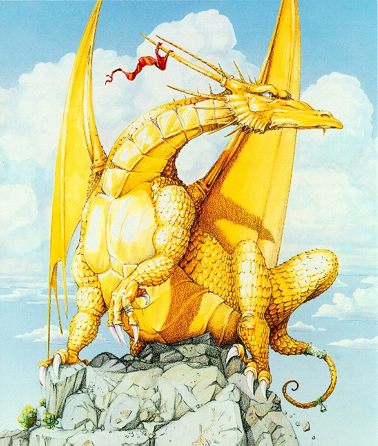
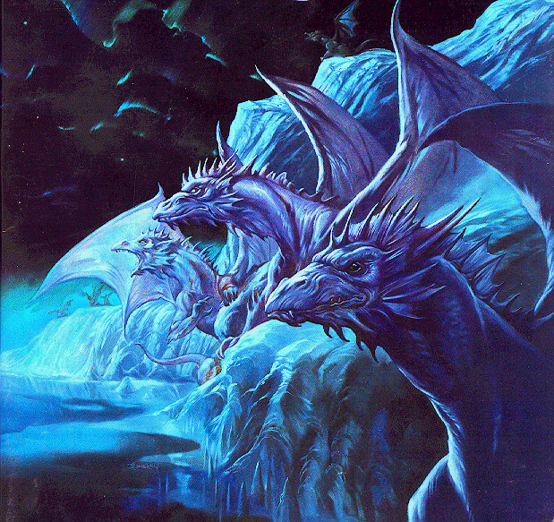
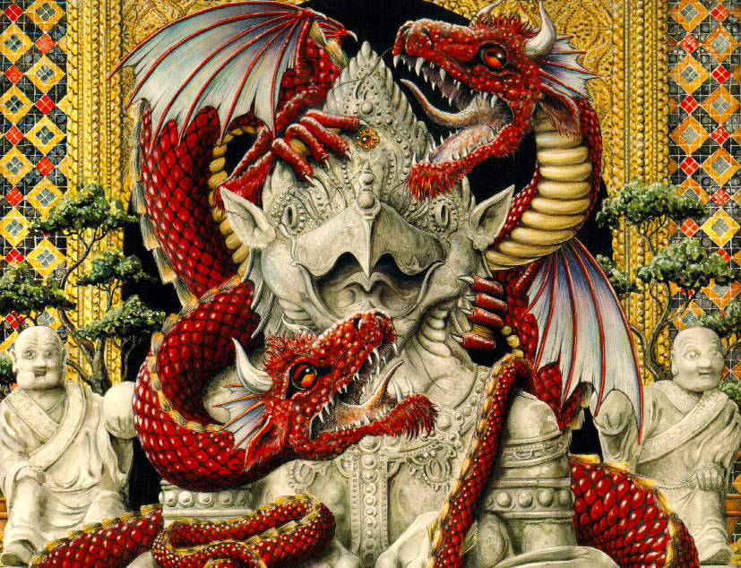
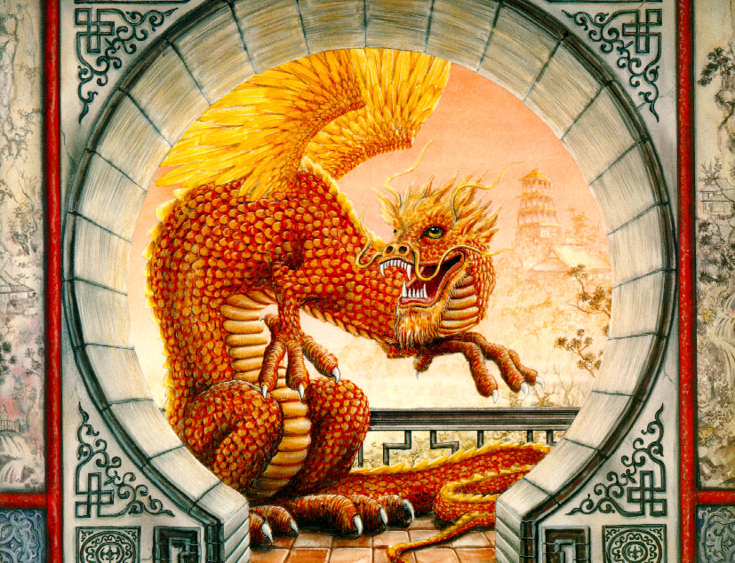

| Home | F.A.Q.s | Theatrical View | Images Of Dragons | Bibliography |
Dragons from the East are used in ceremonies and parades. This creature, like the Western dragon, can sometimes also take on the form of a monster. However, it is made of many different animal qualities and parts. It symbolizes heroism and not so much danger or threat. The Eastern dragon is seen as more of protector than a villain. It is a symbol of beauty and power. The Chinese even have a year of the dragon, and it is said that anyone born in this year will be healthy, wealthy, and wise, all of the things which the dragon of the East represents. The year of the dragon is also said to be a very prosperous year for the people of China.
Because the Chinese hold dragons in such great respect, there are many tales about dragons and the wealth that they bring to the people of China. One story is about a dragon's pearl. Many stories involve dragons protecting riches. But this story is about a single pearl. It is said that a poor boy found a dragon's pearl that multiplied everything that it touched. When they put it in their rice dish one night, the next morning it was full of rice. But when a robber came to still this pearl, the young boy quickly swallowed it. The story goes that the boy then turned into a dragon himself.
While this Eastern story is about the good of turning into a magical dragon, the West has a story of punishment that leaves a man a dragon. In this story a prince kills his father for his fame and fortune. Because of this the dying king puts a curse on his son that he will become a dragon. Later in life this dragon is killed by another of his greedy brothers, who then receives the curse and becomes a dragon as well.

Very little seems to be the same between the dragons of the East and dragons of the West. Even the dragon's habitat changes between the two cultures. Eastern dragons almost all live in some sort of damp place, more likely a lake or the ocean. The Western dragons are the one who are said to be able to live in the deserts or even in fire.
Dragons from the West are said to breathe fire and are seen as unwanted and something that a hero must work to get rid of. These dragons try to kill people who get near them by breathing out fire. They also have great wings and sharp claws.
In almost every thing we read about dragons, the author has had to decide which type of dragon to focus on, the Eastern or the Western. This usually depends on where the author is from and so the type of dragon that he or she is most accustomed to. When talking about dragons it can almost be impossible to talk about a dragon without being biased to one culture or the other.
It could be that the reason each dragon is different between cultures is because the people had never actually seen one, only heard stories and descriptions of them.
Stories of dragons appear all throughout history and almost every culture has their own idea about dragons. Some reasons for this could be the finding of dinosaur fossils. Dragons could be used to describe the indescribable bones of unknown creatures. There are stories about dragons in every part of the world, with the exception of Antartica. Even though there are no people in Antartica, which in that way would seem to make it attractive to dragons, the climate proposes a problem for these creatures who like fire or live in water, but not ice water.
One type of dragon, or sea monster, was feared back in the time of Christopher Columbus. During this time when the world was thought to be flat, these dragons were said to be at the edge of earth, waiting to eat any one who dared to sail that far into the ocean. This story kept many people from exploring farther into the world. Maps were even made marking the place where these dragons lived. At the edge of the map the words "Here Be Dragons" was almost always printed.
Dragons have also appeared in stories that go back to the time of the gods in mythology. The story of Perseus and the Dragon of Posdeidon tells of a vain queen who almost sacrificed her daughter to the dragon, had it not been for Perseus.
Dragons appear most in fairy tales and myths. In most cases the dragon is the keeper of some treasure, either gold and precious jewels or a maiden in despair. A knight in these stories must come to rescue the girl, or to retrieve the riches. To do this he must slay the dragon.
Almost all young children have heard stories of dragons. A story that arose from the Middle Ages is about a knight, later called St. George, who rescued a princess from a dragon and in return was able to baptize the Pagan people to Christianity. The story says that every year a maiden was sacrificed to this dragon. One year when the princess was going to be sacrificed, St. George decided to rescue her. Using his sword, Ascalon, he was able to stab the dragon and later slay him. This may be one of the most popular heroic stories involving the death of dragons, although there are many. The story of St. George and the Dragon has been told for centuries and the event was even painted by the great artist Raphael.

Like St. George and the Dragon, many other stories have been told about dragons and the heroes who kill them. One story like this comes from Norway. The king left his daughter in the castle while he went away on a long trip. He left her a tiny dragon to be her guardian. The princess was skeptical of the tiny creatures, fearing that it could not protect her. However, the dragon soon grew into a large monster. He soon became too good of a guardian for the princess when he grew large enough to wrap his body all around the castle and not let anyone in or out of it. When the king returned home, even he was not permitted inside the castle. The only thing to do was to kill this dragon, so the king offered his the marriage of his daughter to anyone who could kill this dragon. No man in Norway was capable, but a man in Sweden finally killed the beast. As his reward he married the princess and they returned to Sweden together.
Another story is about another young man who fought a dragon for the reward of bringing the king's daughter to his master for marriage. In this story Tristan is tricked by another man who wants the princess for his own wife. In the end Tristan cut off the dragon's tongue as proof of his accomplishment and the lies of the other man were discovered.
During the times of dragons in England, anyone who killed a dragon was awarded knighthood. In ancient Rome, dragons were thought to hold the mysteries of the earth. Romans looked to dragons as a source of knowledge and used them as symbols of strength for their military. They used two forms of dragons, one which was used for heroism, to protect them, and the other, a fearsome dragon, used as a threat.
Other tales about dragons are more about their toes then the dragons themselves. How many toes a dragon has is quiet significant. Many different kinds of dragons are said to have 3 toes. The 4 toed dragons are said to be the earth dragons. But the 5 toed dragons are the most respected of all. Only a king or a high noble had the privilege of wearing a picture of the 5 toed dragon. In ancient times if a peasant was seen wearing the symbol of the 5 toed dragon, he would immediately be put to death.
Dragons seem to have come from exaggerated myths about huge snakes, lizards or other reptiles. One type of dragon is actually called the Wyrm, and has a very snake-like form, with a dragon head. Another smaller form of dragon is called a dragonlet. These dragons are also venomous and can be deadly. In the story The Dragonlet of St. Pilatus, only man with a bad temper and skills with a sword was able to defeat this monster that was only the height of the hero. In almost every culture and all throughout history there are stories of these magical creatures called dragons.
TOP
Dragons are usually thought to have wings and breathe fire. They also are said to have scales and claws. Some also have horns. Almost always they are said to be venomous. Some dragons may have two or more heads. They may also have more than one tail. They may have two, four or even more legs; however, most are known to have four legs. Dragons are said to eat things such as rats, birds, snakes, bats, or even humans, especially children.
Dragons are very intelligent creatures. They live in remote areas, far away from humans, in places that are dark, damp and secluded, such as caves. Dragons were first thought of as creatures who lived in water. Later they became associated with fire. Sea serpents may have been the first dragons, and may be the reason for this association.
Almost all dragon stories portray the dragon as the villain from whom the hero must protect the city or the princess. But some dragons can take on the form of the protector. The biggest differences in dragons usually come from different cultures, especially the cultures of the East and the West. Each culture seems to have their own idea about dragons.

Dragons cannot be put all into one group, as there are so many dragons. Each culture seems to have their own type of dragon, and each of these dragons is usually very different. Some people have said that dragons once existed, maybe during the time of the dinosaurs. Others believe that dragons began around the same time the earth began. A few people even claim to have seen a dragon in their life time. Of these people who claim to have seen one, they usually agree that it was humans who finally defeated the dragons.
But most of all, dragons are fascinating, magical creatures who have captivated our attention for thousands of years. The many different kinds of dragons and the ability for us to use our imagination to create these creatures only adds to their appeal. Many stories have been told about these great beings and it seems like dragons are a part of our mythical history. Whether these creatures are or ever were real probably doesn't matter due to the fact that the imagination can create them in almost any situation.
Dragons have often been used in art work. Pictures or sculptures of dragons seem mysterious and magical. Fashion has found style in these magical creatures, especially in the Eastern dragons.
TOP
Dragons are different sizes, of course. They start out as eggs, from 1-4 feet in length, and about half that in diameter. As adults, some species of dragons can be as long as 85 feet, with a wingspan of 170 feet.
A dragon's eye has a large iris and a vertical pupil, like a cat. This allows the pupil to open extremely wide and admit much more light than a human eye. The white of a dragon's eye us often not white, but yellow, gold, green, orange, red, or silver.

A dragon's eye is protected by a leathery outer eyelid and three smooth inner eyelids. The innermost membrane is crystal clear and protects the eye from damage while the dragon flies. The other two eyelids mainly serve to keep the eye clean. They are not as thin nor clear as the innermost membrane. A dragon can use these inner lids to protect its eyes from sudden flashes of bright light.
Dragons are hatched from eggs. These eggs vary in size depending on the dragon type, but are usually the same color as the mother dragon. Dragon eggs have elongated, ovoid shapes and hard, stony shells.
When born, a dragon's scales are as soft as tissue paper, and slowly harden as the dragon ages. During the first year of life, a dragon's scales will be very soft and supple. Over time, they will become as hard as stone or steel. Metallic dragons' scales start out very dull, but become shinier throughout the life of the dragon.